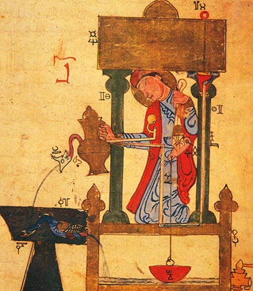
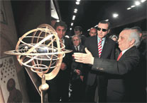
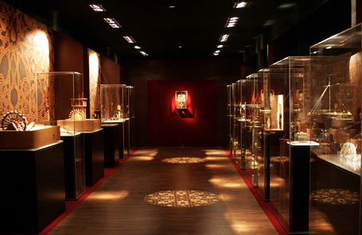
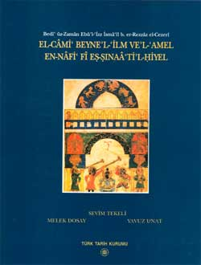

Tarihte,
Dünya'da ve Türkiye'de Teknoloji:
Erkut Neðiþ
Uzman
Gebze Yüksek Teknoloji
Enstitüsü
11 Ekim 1993, Ýstanbul
Müslüman
Devletler ve Osmanlý'nýn Teknolojide Önderliði
Osmanlý
Devleti'nin Teknolojide Geri Kalma Sebepleri
Avrupa'lýlarýn
Bilim ve Teknolojiyi Müslümanlardan Almalarý ve Geliþtirmeleri
ABD'nin
Teknoloji Tarihi ve Geliþme Sebepleri
Japonya'nýn
Teknoloji Tarihi ve Ýlerleme Sebepleri
Teknolojik
Ýcat ve Yenilikler
Teknoloji
Transferi
Teknoloji
Politikasý
Araþtýrma
ve Geliþtirme Projelerinin Ýdaresi
Ýlgili link ve dökümanlar (Bu bölüm, Haziran 2008'den sonra eklenmiþtir):
ÖNSÖZ
Bu rapor, Gebze Yüksek Teknoloji
Enstitüsü (GYTE) rektörü Prof. Dr. Hikmet Üçýþýk'ýn talebi üzerine hazýrlanmýþtýr.
Raporda belirtilen görüþler yazarýna aittir.
Türkiye'nin, batýlý ve diðer
teknoloji açýsýndan geliþmiþ ülkelere teknolojik geliþmiþlik açýsýndan
yetiþip yetiþemeyeceði hatta bu ülkeleri geride býrakýp býrakamayacaðý,
teknoloji konusundaki fýrsatlarý geri dönüþü olmayacak bir biçimde kaçýrýp
kaçýrmadýðýmýz bir tartýþma konusu olduðu gibi, devlet yöneticilerinin,
ülkemizin akademik ve teknik kadrosunun, sanayicilerimizin ve halkýmýzýn
gerçekten de Türkiye'nin, Dünya'da teknoloji konusunda lider olmasýný isteyip
istemediði
de ayrý bir tartýþma konusudur. TC'nin kurulmasýndan bu yana bilim ve teknolojiyle
ilgili çok þeylerin söylendiði fakat çok azýnýn gerçekleþtirilmiþ olmasý
bizi bu karamsar ihtimallerden bahsetmeye itmiþtir. Yukarýdaki tartýþma
konularý bu raporun kapsamý dýþýnda býrakýlmýþtýr.
Henüz yeni kurulmuþ ve daha
bebeklik çaðýný yaþayan GYTE'nün, yapacaðý teknoloji geliþtirme çalýþmalarýnýn
yanýnda, ileride ülkemize uygun bir teknolojik zihniyetin kazandýrýlmasýna
da katkýda bulunmasý gerekmektedir.
Türkiye'de teknoloji konusunda
yapýlan çalýþmalar genellikle sistemli olmamakta ve bir süreklilik arzetmemektedir.
Elinizdeki çalýþma da bu kategoriye dahil edilebilir. Fakat yakýn bir gelecekte,
GYTE'nde sadece teknoloji idaresi, teknoloji politikasý vb. konularda araþtýrma
yapacak ve yüksek lisans eðitimi verecek bir bölümün kurulmasýnýn düþünülüyor
olmasý umut vericidir. Ancak ayný zamanda da yapýlan çalýþmalarýn devlet
politikasýný etkileyebildiði bir sistemin Türkiye'de oturtulmasý gerekmektedir.
Aksi halde burada da yapýlan çalýþmalar önemli bir sonuç veremeyecektir.
Bu çalýþmada, teknoloji ve
bununla alâkalý önemli konulara genel bir þekilde deðinilmiþtir, aslýnda
bu raporda deðinilen her bir alt baþlýk için ayrý bir tez konusu rahatlýkla
çýkartýlabilir.
Çalýþmalarýmýz sýrasýnda
genellikle Orta Doðu Teknik Üniversitesi (ODTÜ) ve Boðaziçi Üniversitesi
(BÜ) kütüphanelerinden yararlanýlmýþtýr. Genellikle dergilerdeki makaleler
yerine kitaplara öncelik verilmiþtir. Çünki yayýnlanan yeni makalelerin
çoðu, konuya giriþ niteliðinde olmasý planlanan bu rapor için gereðinden
çok detaylý ve özel konularý içermektedir.
Kütüphanelerde Teknoloji
konusunda onlarca kitap tespit edilmiþtir, bunlarýn arasýndan en temel
konularla alâkalý olanlarý seçilmiþtir. Ayrýca MIT "Massachusetts teknoloji
enstitüsü"nün yayýnladýðý kitaplara öncelik verilmiþtir. Çünki ABD'nde
teknoloji konusunda ilk sistematik çalýþmalarý yapan ve sadece teknoloji
idaresi konusunda araþtýrma yapan, eðitim veren disiplinler arasý bir bölümü
ilk defa kuran bu enstitüdür.
BÜ kütüphanesinden 1, 2-10,
18, 19, 22, 26, 27, 29, 31 no'lu referanslar, ODTÜ kütüphanesinden ise
11-17, 23, 24, 25, 28, 30 no'lu referanslar temin edilmiþtir.
1-6 numaralý kaynaklar teknoloji
tarihi, 7,8,9 no'lu referanslar ABD, Japonya ve orta doðu ülkelerinin teknoloji
tarihi ve yakýn geçmiþteki teknolojik yapýlarý, 10-23 no'lu referanslar
teknoloji idaresi, icat ve yenilikler, teknoloji politikasý, 24-32 no'lu
referanslar ise Türkiye'nin teknolojisi ile alâkalý yerli kaynaklarý kapsamaktadýr.
Teknoloji tarihi kýsmýnda
Çin, Hindistan ve Rusya þimdilik incelenmemiþtir. Bu konular, teknoloji
tarihi üzerinde yoðunlaþtýrýlmýþ ayrý bir çalýþmayla ileride incelenebilirler.
Raporun hazýrlanmasý sýrasýnda
belirtilen referanslar haricinde 1989-1992 yýllarý arasýndaki üç yýllýk
TÜBÝTAK/SAGE (Türkiye Bilimsel ve Teknik Araþtýrma Kurumu/ Savunma Sanayii
Araþtýrma ve Geliþtirme Enstitüsü) tecrübem ve bu esnada yakýn iliþkide
bulunduðum birçok araþtýrmacý ve akademisyen ile yapýlan görüþmelerden
alýnan fikirlerden de yararlanmýþ bulunmaktayým. Çalýþmalarýma böyle istiþarelerle
yardýmcý olan, Türkiye'nin teknolojik meseleleri konusunda dertli bütün
çevreme teþekkürü bir borç bilirim.
GÝRÝÞ
Deðiþik kaynaklarda birçok farklý
teknoloji tanýmý yapýlmýþtýr. Teknolojiyi yapan insan olduðuna göre tarifini
de insanýn özüne bakarak yapmak isabetli olacaktýr;
Ýnsanlarýn giyinme, beslenme,
barýnma, ýsýnma gibi temel ihtiyaçlarýnýn yanýnda daha birçok maddi ihtiyaçlarý
vardýr. Bununla birlikte her insanýn özünde, hakim olma, daha güçlü olma,
daha iyi ve kolay yapma gibi dürtüler de vardýr. Ýnsanýn fizikî durumu
ise, tek baþýna bu kadar çok ihtiyaca cevap verebilecek yeterlilikte deðildir.
Böylesine büyük problemlerin üstesinden gelebilmek için insanýn kullanabileceði
üç temel sermayesi, aklý, duyu organlarý, elleri ve doðal kaynaklardýr.
Ýnsanlarýn baþta zekâlarý
olmak üzere bu üç önemli sermayesini kullanarak maddi ihtiyaçlarýný karþýlamak
amacýyla bulduðu, geliþtirdiði alet, cihaz ve yöntemlere teknoloji diyoruz.
Tabiattan yararlanabilmek için ise insanlarýn öncelikle onu iyi tanýmalarý,
kurallarýný öðrenmeleri lazýmdýr ki bu öðrenme iþlemine de bilim diyoruz.
Küçük toplumlarda ve bunlarýn
düzenli kompleksleri olan devletlerde ise insanlar topyekün maddi ihtiyaçlarýný
karþýlamak için yardýmlaþmak zorundadýrlar. Burada ise, insanlarýn belli
bir toplumsal ihtiyaca yönelik problemleri çözme için koordineli olarak
teknoloji geliþtirmesi gerekmektedir. Böylece teknoloji idaresi, teknoloji
politikasý gibi kavramlar ortaya çýkmaktadýr.
Bir ülkede teknolojinin saðlýklý
geliþtirilebilmesinde, bulunduðu toplumun ihtiyaçlarýný iyi kavramýþ ve
bir teknolojinin nasýl geliþtirilmesi gerektiðini bilen, kendinden önce
geliþtirilmiþ teknolojileri özümsemiþ fakat önceden yapýlanlara takýlýp
kalmayan, yenilikler önerebilecek mucit kabiliyetli fertlerin yetiþtirilmesi
en önemli problemi teþkil etmektedir.
Tarihte, siyasi alanda Dünya'da
önemli bir konuma sahip olmuþ büyük ve güçlü devletlerin ayný zamanda birçok
konuda ve özellikle de askeri sahada zamanýnýn en ileri teknolojilerine
sahip olduðu dikkat edilmesi gereken önemli bir gerçektir.
Teknoloji idaresi konusunu
incelerken öncelikle konunun tarihinden baþlamak gerekmektedir. Bu sayede
mevzu daha köklü ve kapsamlý olarak kavranabilir. Tarihte gelmiþ geçmiþ
bütün büyük devletler ve medeniyetlerin, sosyal, kültürel ve ekonomik deðiþimlerine
baðlý olarak teknolojik seviyelerinde de iniþler ve çýkýþlar görülmüþtür.
Bu geliþmelerin sebepleri araþtýrýlýp gerekli dersler çýkartýldýðý taktirde,
TC'nin günümüzde yaþadýðý birçok teknolojik probleme köklü çözümler bulunabilir.
Teknolojinin geliþmesi, toplumdaki
birçok sosyal olaylarla baðlantýlýdýr; teknolojik ilerlemeler kaydedilebilmesi
için öncelikle bunun istenmesi gerekir. Bazý topluluklarýn beslenmek, giyinmek
ve barýnmak gibi temel ihtiyaçlarýný karþýlamak için birtakým zaruri teknolojileri
oluþturmakla yetinmelerine raðmen, bazýlarýnýn bununla tatmin olmayarak
niye daha ileri teknolojilere ihtiyaç duyduklarý ilginç bir araþtýrma konusudur.
Bu sebeple tarihte büyük bilimsel ve teknolojik ilerlemeler kaydetmiþ müslüman
devletlerin ve Osmanlý'nýn niye, nasýl ve hangi motivasyonla bunu baþardýðý
incelenmiþtir. Bununla birlikte Osmanlý'daki genel sosyal gerileme ile
yakýndan baðlantýlý teknolojik gerilemenin, bunu takip eden dönemlerde
Avrupa'da sanayii devrimi yapýlmasýnýn, akabinde Amerika kýtasýna göç eden
çalýþkan, bilgili ve motivasyonlu insanlar ile ABD'ndeki teknolojinin hýzla
geliþerek Avrupa'yý geride býrakmasýnýn ardýnda yatan sebepler de araþtýrýlmýþtýr.
Ýkinci bölümde ise günümüzde
teknoloji ile alâkalý oluþan kavram ve müesseselerin tahliline girilmiþtir.
Bu bölümde, daha ziyade ABD'nde yapýlan çalýþmalar referans alýnmýþtýr;
teknolojik icat ve yeniliklerin hangi þartlar altýnda yapýlabileceði, teknolojinin
nasýl ve hangi þartlar altýnda transfer edilebileceði veya edilemeyeceði,
teknoloji politikasýnýn amacý ve nasýl olmasý gerektiði, araþtýrma ve geliþtirme
projelerinin idaresinin nasýl yapýlacaðý ve bunlarla alâkalý diðer konular
incelenmiþtir.
Üçüncü bölümde ise Türkiye'de
teknoloji konusunda yapýlan çalýþmalar bulunmaktadýr. Bu konuda tespit
edilen ilk literatür TÜBÝTAK'ýn ilk kurulduðu yýllarda bünyesinde bulunan
bilim politikasý ünitesi tarafýndan yapýlmýþtýr. Fakat daha sonra bu çalýþmalarýn
devamý gelmemiþ, yapýlmýþ olan çalýþmalar da beklenenin karþýsýnda çok
cýlýz kalmýþtýr. 1969 ve 1970 yýllarýnda iktisadî araþtýrmalar vakfýnýn
düzenlediði seminerlerde yapýlanlar ise uygulamaya geçirilemeyen önerilerden
ibaret kalmýþtýr. Teknoloji konusunda tespit edilen son kaynaklarýn çoðu
ise Devlet Planlama Teþkilatý tarafýndan 1976-1988 tarihleri arasýnda yapýlmýþtýr.
Bu çalýþmalar da güzel öneriler ve tespitler içermektedir ama tutarlý,
sürekli ve baþarýlý bir teknoloji politikasýnýn ülkemizde oturtulmasýna
yetmemiþtir.
Baþa dön
TEKNOLOJÝ TARÝHÝ
Teknoloji tarihini incelemeden
teknoloji konusunda temel bir araþtýrma yapýlmasý imkansýzdýr. Ýnsanlarýn
Dünya'da var olmasýndan bu yana teknoloji de ismi konulmamasýna raðmen
uygulanmaya baþlamýþtýr. Fakat bu raporda günümüz teknolojisi ile çok uzaktan
alâkalý olmadýðýna inandýðýmýz, milattan sonra 700 yýlýndan itibaren Dünya'da
teknolojik önderliðe sahip olmuþ devletler incelenmiþtir. Ayrýca 700-1700
yýllarý arasýnda Endülüs, Arap, Ýran ve Osmanlý'lardaki teknolojik ilerleme
ve gerilemeye, daha sonra Osmanlý'larda baþlayan gerileme ve oluþmuþ olan
bilim ve teknolojinin Endülüs müslüman devletleriyle Avrupa'ya transferine,
Avrupa'da teknolojnin geliþme sebepleri ve yakýn tarihte Avrupa'dan göç
edenlerin kurduðu ABD'ndeki teknoloji tarihine deðinilmiþtir. Baþa dön
Müslüman Devletler ve Osmanlý'nýn
Teknolojide Önderliði:
Müslümanlýðýn Dünya'ya gelmesinden
ve ilk müslüman devletlerin kurulmasýndan sonra bilim ve teknolojide çok
büyük ilerlemeler olmuþtur. Sosyal ve kültürel alanda meydana gelen büyük
geliþmelere paralel olarak ilerleyen bilim ve teknoloji, Osmanlý döneminde
doruðuna ulaþmýþtýr. Müslümanlar öncelikle batýdaki Roma ve doðuda Çin
ve diðer devletlerde geliþtirilmiþ bulunan bilim ve teknolojiyi aldýlar,
kitaplarý kendi dillerine çevirdiler. Daha sonra ise bu bilgilerin içinden
yanlýþ ve tutarsýz olanlarý ayýklayýp belli bir düzene soktular. Ardýndan
ise kendileri bu bilim ve teknolojiye katkýda bulunmaya baþladýlar.
Dokuzuncu ve onuncu yüzyýllarda,
baþta Endülüs, Baðdat, Harran ve Basra olmak üzere Kuzey Afrika, Mýsýr,
Doðu Fýrat ve Dicle çevrelerindeki daha birçok Ýslâm þehirlerinde büyük
kütüphaneler kuruldu, eðitim sistemi ve ilim çok geliþtirildi. Eðitim,
uzman öðretmenler refakatýnda, öðretmenin veya öðrencinin evinde, sýký
bir diyalog ile çok verimli bir þekilde yapýlýyordu (ref.
1, s. 12). Bütün kitaplarýn, birçok
karmaþýk bilimsel ve teknolojik kavramlarý açýklamaya elverilþli bir dil
olan arapça ile yazýlmýþ olmasý, deðiþik milletlerden âlimlerin bu ortak
dil sayesinde rahatça bilgi alýþ veriþinde bulunmalarýný saðladý ( ref.
1, sayfa 10). Bu ise icatlarýn daha çabuk bir þekilde yayýlarak teknolojik
yeniliklere dönüþebilmesini saðladý.
Baðdat'ýn altýn devirlerinde
(9. yy.), Ben-i Musa kardeþler, otomatik, kapalý devre kontrollü sistemler,
robotlar ve sibernetik konusundaki ilk çalýþmalarý, birtakým batý kaynaklý
kitaplardan tercüme yoluyla elde edilen bilgilerin de yardýmýyla gerçekleþtirmiþlerdir.
Fakat zamanla müslümanlarýn dýþarýdan bilgi edinmeleri azalmýþ ve tamamiyle
Ýslâm teknolojisinin ürünleri olan çalýþmalar yapýlmaya baþlanmýþtýr;
Üçyüzyýl
sonrasýnda, Artukoðullarý devrinde yaþamýþ olan El-Cezeri ise sibernetik
ve otomasyon konusunda tamamiyle orijinal birçok icatta bulunmuþtur; Çek
valfli ilk emme basma tulumbayý kendisi bulmuþtur. El-Cezeri "Olaðanüstü
Mekanik Araçlarýn Bilgisi Hakkýnda Kitap" isimli eserinde, birçok otomatik
alet, robot ve saat mekanizmalarý hakkýnda teknik resimlerle desteklenmiþ,
teori deney ve sistemlerin kalibrasyon prosedürlerini de içeren bilgiler
vermektedir ( ref.1, s.15). (Orijinal Arapça
el yazmasý Topkapý sarayýnda bulunan bu eserin, Batý tarafýndan Almanca
ve Ýngilizce'ye çoktan çevrilmiþ, yayýnlanmýþ ve baþarý ile çalýþan modelleri
yeniden üretilmiþ olmasýna raðmen halâ Türkçe'ye çevrilmemiþ olmasý, teknoloji
tarihimize olan ilgisizliðimizin bir göstergesidir...). (ilgili yeni bilgi)
Ýbn-i Sîna birkaç yüzyýl
öncesine kadar Avrupa'da temel olarak okutulan týp ile ilgili meþhur kitabýný
yazmýþtýr. (ref.1, s. 32). Üçüncü referansdan,
tespit edilebilen, pozitif ilimlerde önemli icatlarda bulunmuþ 352 müslüman
alim konusunda ayrýntýlý bilgi elde edilebilir.
Müslümanlar, matematik, fizik,
kimya, astronomi, navigasyon, metalurji vb. birçok konuda önemli yenilikler
yaptýlar. Bu yenilikleri yapan bilim adamlarý ve mühendisler halktan ve
devletten büyük itibar ve teþvik gördüler, maaþlarý devlet tarafýndan karþýlandý.
Yapýlan yeniliklere karþý toplumda zamanýnýn Avrupa'sýnda olduðu gibi engelleme
deðil istek ve teþvik vardý. Müslüman bilim adamlarý hiçbir
zaman araþtýrma yapmýþ olmak için çalýþmadýlar; yaptýklarýnýn hep sosyal
bir fayda getirmesine özen gösterdiler.
Günümüzde yeni yeni çevreci fikirler
oluþmaya, bilim ve teknolojinin sosyal yapýya ve tabiattaki dengelere olumsuz
yan etkileri olmadan geliþtirilmeye çalýþýlmasýna raðmen bu kavram zamanýnýn
müslüman devletlerinde ve alimlerinde çoktan yerleþmiþti.
800 yýllarýnda Ýtalya imparatoru
Parlman'a, Harun-el Reþid tarafýndan hediye olarak, fil þeklinde otomatik
bir saat hediye edilmiþti. Bu saati Parlman'ýn yanýndakiler gördüklerinde
sihirli zannederek parçalamaya kalkmýþlardýr (ref.
3, s. 86) bu olay, o devirdeki Avrupa teknolojisinin ne kadar geri
olduðunu gösterir.
Ayrýca 1492 tarihinde Endülüs'ü yakýp yýkan Avrupa'lýlarýn,
gördükleri rasat kulesini çan kulesi zannedip çan takmalarý (ref.
3, s. 75) da buna güzel bir örnektir.
Osmanlý'larda teknoloji zamanýnýn
doruðuna çýktý; Lâgarî Hasan Çelebi, yedi katý yakýtlý roket motoruyla
ilk baþarýlý insanlý uçuþu gerçekleþtirdi. Hazerfan Ahmet Çelebi, ilk kontrollü
ve baþarýlý motorsuz (planör) uçuþunu baþarýyla tamamladý. Ýlk denizaltý
yine Osmanlýlar tarafýndan üretilmiþ ve kullanýlmýþtýr. Zamanýnýn en büyük
ve hýzlý gemileri modern teknolojilerle üretildi. Padiþah Yýldýrým Beyazýt,
hükümranlýðý devrinde Dünya'daki ilk standartlarý oluþturdu...
Osmanlý'da savaþ teknolojisi
de çok geliþmiþti, zamanýnýn en iyi çelik dövme kýlýçlarýný, en büyük toplarýný,
menzil rekoru günümüzde dahi kýrýlamamýþ ok ve bunlarý çok büyük bir enerji
verimi ile sevkeden, kompozit malzemeden yaylarýný imal ettiler... (Osmanlý okçulukta liderdi)
Osmanlý sisteminde, ilim
adamlarýnýn yoðun bir þekilde bir yerde toplanarak, yetiþtirildiði toplumlarýn
geri kalmalarýna sebep olmamalarý için tedbirler alýndý; Ýstanbul'a gelip,
âlimlerin büyük itibar ve himaye gördüðü bu çok cazip ortamda sürekli yerleþmek
isteyen yabancý ilim adamlarýna izin verilmez ve belli bir süre sonra kendi
ülkelerine dönerek oralarda ilimlerini yaymalarý istenirdi.
Günümüzde sadece
kendi yararýna beyin göçünü teþvik eden batýlý ülkelerle karþýlaþtýrma
yapýldýðýnda Osmanlý sisteminin ne kadar adil olduðu, bilimi bilim için
deðil, insanlýðýn topyekün refahý için yaptýðý anlaþýlabilir.
Osmanlý Devleti'nin Teknolojide
Geri Kalma Sebepleri:
Tarihte yükselmiþ her büyük
devlet gibi Osmanlý da gerilemeye baþlamýþtý. Osmanlý'larda ve diðer Ýslâm
ülkelerinde üst düzey yöneticilerde, âlimlerde ve halkta meydana gelen
yaygýn bozulma ve tembellik teknolojide de kendini gösterdi.
Bilim ve teknolojide geri
kalýnmasýnýn asýl sebebi bu ise de, raporumuzda teknolojik gerileme ile
ilgili bazý kilometre taþlarýna deðineceðiz.
Gerileme sebepleri üç ana
grup altýnda toplanabilir;
- âlimlerin himaye görmesinin zamanla ortadan
kalkmasý,
- bazý âlim geçinenlerin dine saldýrmasý, halkýn maneviyatýna deðer
vermemesi sonucu halkýn bunlara karþý olan güvenini yitirmesi, itibar etmemesi.
- Yapýlan savaþlarda yaðmalanan, yakýlan kütüphaneler ve öldürülen âlimler
sebebiyle bilgi birikiminin ve teknolojinin sonraki nesillere aktarýlamamasý.
Son þýk aslýnda temel bir sebep deðildir fakat gerilemeyi hýzlandýrdýðý
bir gerçek olduðu için raporumuzda incelenmiþtir.
Aþaðýda, 3
no'lu referansdan konuyla ilgili yapýlan alýntýlara yer verilmiþtir;
...13. yüzyýldan itibaren
bu usül (âlimlerin hükümdarlardan ilimleri seviyesinde himaye görmesi)
yavaþ yavaþ ortadan kalktý. Bunun yerini adam kayýrma rüþvet ve iltimas
aldý. Ýlmi yüksek olana deðil, daha az olana yüksek mevkiler verildi...
16. asýrdan itibaren artýk Fatih'in âlimlere müþavere ederek vazettiði
esaslar tamamen kaybolmuþtu...
...Ýþte münazaralar da artýk
bu gerileme devrinde sadece muhatabýný susturmak, adýný duyurabilmek için
yapýlmaya baþlanmýþtý. Bu münazaralarda maðlup olan kimse, galip gelene
kin beslemeye baþlýyor ve öcünü alabilmek için ilim dýþýnda her çareye
baþ vuruyordu...
...Hükümdar ve emirlerden
maaþ alamayan, teþvik ve iltifat görmeyen âlimler, geçim derdine düþtüler...
Tabipler hariç hiçbir ilim adamý bilgisini satacak bir kimse bulamazdý...
...Ýlme heves edenlerin azalmasý,
yeni icatlarýn duraklamasýna ve eski bilgilerin unutulmasýna vesile oldu.
...Halk önceleri âlimlere
karþý hürmetkâr iken, dine hücum eden ve inkâr eden sözde âlimlerle karþýlaþýnca,
onlara artýk itimatlarý azaldý ve zamanla güvenleri hiç kalmadý. Daha evvel
âlimlerle arkadaþlýk etmeði, hatta konuþmayý bile kendilerine bir þeref
sayan halk, onlardan bir kýsmýnýn dini inkâr ettiðini görünce, sözlerine
inanmaz oldular. Ayný zamanda bu kötü âlimlerle beraber iyilerine de cephe
almaya baþladýlar. Çocuklarýna bile bu yüzden ilim öðretmekten kaçýndýlar.
Ýþte bu durum da âlimlerin azalmasýna ve Ýslâm medeniyetinin gerilemesine
sebep oldu.
...Çok acýdýr ki, týp ve
kimya ilimlerinde dünyaca meþhur olan "Ebu Bekr Muhammed bin Zekeriya el-Razî
(864-925)" bu çeþit küfre giren âlimlerden biridir. Razî, týp, felsefe
ve kimyada o kadar þöhrete ulaþmýþtý ki, Onun iyileþtiremediði hastayý
hiçbir doktor iyileþtiremez kanaati hasýl olmuþtu. Fakat felsefî fikrinde
"Meþarik el-Enbiya" ve "Fi naks el-Edyan" isimli eserleriyle dinin alehinde
bulunmuþtur. O, peygamberlerin mucizelerini hilelerden ibaret kabul ediyordu.
Din akidelerinin hakikate zýt olduðunu ve dinin insanlarý tembelliðe sevkettiðini,
mukaddes sayýlan kitaplarýn deðersiz olduðunu söylüyordu...
...Ýspanya'nýn (Endülüs)
zaptý sýrasýnda "Ximens" adýnda bir kardinal, Gýrnata'nýn "Bab'ül-Remle"
meydanýnda, bir milyona yakýn kitap yakmýþtýr. Moðollar, 1220-1221 yýllarý
içinde bütün Türkistan ve Harzem'i fethettiler. Baðdat þehri ise 1258 yýlýnda
Moðollarýn eline geçti.
...Sonra ordusunu þehre saldýrtmýþ, küçük çocuklar
hariç, bütün saray halkýný kýlýçtan geçirtmiþ ve þehirdeki katliam ise
kýrk günden fazla devam etmiþti. Baðdat'ýn zaptý sýrasýnda, oradaki 36
kütüphanenin kitaplarý tahrip edilerek Dicle'ye dökülmüþtü...
Bazý batýlý kaynaklar Ýslâm
teknolojisinin 11. yüzyýlda durduðunu söylerler, aslýnda bu doðru deðildir;
Gerçekte 11. yüzyýlda geliþmesi yavaþlayan Ýslâm teknolojisi, 16.-17. yüzyýla
kadar birçok açýdan Avrupa'ya olan üstünlüðünü korudu. (ref.
1, s. 279-280).
Baþa dön
Avrupa'lýlarýn Bilim ve Teknolojiyi
Müslümanlardan Almalarý ve Geliþtirmeleri:
Nasýl müslüman devletler, tarihte
belirdiðinde Dünya'daki teknolojiyi alarak daha da geliþtirmiþlerse, Avrupa'lýlar
da 6. yy. ve 12. yy. arasý süren karanlýk ortaçað dönemlerinin akabinde,
Rönesans sonrasý, Halkýn, yeni bir motivasyon ve idealle yönlendirilmesi,
refah seviyesini arttýrmak için sanayii ve teknolojide kuvvetli bir ilerleme
ihtiyacý duymasý neticesinde halihazýrda müslümanlarýn elinde olan teknolojiyi
anlayarak kullanmaya ve geliþtirmeye baþlamýþlardýr.
Avrupa'lýlar bilim ve teknolojinin
çoðunu Endülüs müslümanlarýnýn Ýspanyolca'ya çevrilmiþ eserleri aracýlýðý
ve Haçlý seferlerindeki tecrübeleriyle elde ettiler. Hýristiyanlar için
haçlý seferlerinin tek yararý da bu olmuþtur. Ayrýca, Avrupa tüccarlarý
ve Venedik tacir pololarý Avrupa'yý uzak doðuya baðlayan kervan yolunu
kullanýrken müslümanlardan teknolojik açýdan birçok þey öðrenmiþlerdir.
Bu kervan yolunun haricinde, Ýran limanlarýndan, Hindistan ve Çin'e giden
deniz yolundan da faydalanmasýný bildiler. O zamanýn Avrupa'lý seyyahlarý,
bilgi edinmek için müslüman seyyahlara daima muhtaçtýlar. Birçoðu, Doðu
Asya'da ve Ýslâm ülkelerinde gördüklerini, duyduklarýný, coðrafî ve fennî
terimleri müslümanlarýn söyledikleri gibi ayný þekilde kabul etmiþlerdir. Birçok bilimsel ve teknik
terim Ýgilizce'ye Ýtalyanca ve Ýspanyolca aracýlýðý ile Arapça'dan geçmiþtir;
denizcilikte arsenal, kimyada alkol ve alkali, gýdada þeker, þurup gibi
kelimeler bunlara örnek olarak verilebilir. (ref.
1, s. 33).
Endülüs'lü müslümanlar teknolojik
bir yenilik olarak aðýrlýkla çalýþan saatleri kullanmaya baþladýktan ancak
250 yýl sonra kuzey Avrupa'ya bu teknoloji geçebilmiþtir. Hýrýstiyanlar
1085 yýlýnda Tagus ve Toledo þehirlerine girdiklerinde iki adet büyük su
saati ile karþýlaþtýlar. Bu saatler, olayýn ardýndan 50 yýl geçmesine raðmen
problemsiz çalýþmýþlardýr.
Ayrýca Avrupa'lýlar Gotik mimarideki ojiv þeklindeki
sivri kemeri, tarým, sulama ve hidrolik mühendisliði ile ilgili konularý
Endülüs, Venedik'teki camcýlýk teknolojisini de Suriye müslümanlarýndan
öðrenmiþlerdir. (ref. 1, s. 33-34). Hýristiyanlar, 12. yy.'da
dikey eksenli rüzgar türbinini yeni bir enerji kaynaðý olarak Ýran müslümanlarýndan
öðrenmiþlerdir. (ref. 4, s. 77-78). Hýristiyanlar, müslümanlara
karþý olan komplekslerinden dolayý bir süre sonra aldýklarý teknolojiyi
aslýnda kendilerinin bulmuþ olduklarýný iddia etmeye baþlamýþlardýr. Ancak
son yýllarda bazý hýristiyan bilim adamlarý bunu yer yer itiraf etmeye
baþlamýþlardýr.
Onsekizinci yüzyýlýn ilk
yarýsýndan ikinci yarýsýna kadar Avrupa'da önemli teknolojik yenilikler
yapýlmadý ama evvelki bilgilerin bilimsel metodlarla derlenip toparlanmasý
ve eðitiminin verilmesi gerçekleþtirildi; Isý ve sýcaklýk arasýndaki fark,
özgül ýsý kavramý bulundu. Kömürü yüksek fýrýnlarda kullanmaya baþlayan
Ýngilizler, bu yolla çelik döküm üretebildiler. Bu teknoloji ile de, tekstil
makinalarý ve bunlarý çalýþtýracak olan buhar makinalarýný daha kolay,
dayanýklý ve yaygýn bir þekilde üretmeye baþladýlar.
1763'de James Watt'ýn icad
ettiði buhar makinasýnýn teknolojik yeniliðe dönüþmesiyle baþlayan sanayii
devrimi sonrasýnda Ýngiltere'deki teknolojinin geliþimi daha ziyade ferdi
icatlarla olmuþtur.
Almanya ise eðitime ve bu sayede geniþ kitlelere teknolojinin
ne demek olduðnu anlatmaya önem vererek daha programlý ve hesaplý bir þekilde
teknolojisini oluþturmuþtur. (ref. 4, s.
269). Bu sayede Alman'lar birçok açýdan daha köklü ve saðlam bir teknolojik
altyapý oluþturmuþlardýr.
Amerika'daki hýzlý teknolojik ilerlemeyi 1876
yýlýnda düzenlenen Philadelphia uluslararasý fuarýna gönderttiði uzmanlarý
ile diðer Avrupa ülkelerine kýyasla erken fark eden Almanya, aldýðý yeni
tedbirlerle kýsa bir süre sonra birçok açýdan ABD'ne eriþmiþtir. Günümüzde,
teknolojik açýdan Avrupa'nýn en geliþmiþ ülkesi olan Almanya'nýn yine de
ABD'nden geri olmasýnda, ABD'ne nazaran kýsýtlý insan ve doðal kaynaklarýnýn
etkisi büyüktür.
Baþa dön
ABD'nin Teknoloji Tarihi
ve Geliþme Sebepleri:
ABD'ni kuranlar Avrupa'dan göç
etmiþ olduklarý için ABD'ndeki teknolojinin bir transfer iþlemiyle baþladýðý
söylenebilir.
Amerika'ya göç eden kiþiler
Avrupa'nýn atýlýmcý, cesaretli ve zorluklara göðüs geren çalýþkan insanlarýydýlar.
Vatanlarýný býrakýp yeni ve az bilinen uzak bir kýtaya onca riski alarak
göç etmeleri bunu doðrulamaktadýr. Amerika'daki el deðmemiþ büyük topraklar
ve doðal kaynaklar böyle motivasyonlu insanlar ile bir araya gelince ABD'nde
nasýl hýzlý bir teknolojik geliþme olduðunu anlamak güç deðildir.
Ayrýca, günümüz teknolojisi
ile halâ üretilememiþ, insan gibi hünerli, akýllý, zor ve karmaþýk iþleri
yapabilen, herkesin kullanýmýna sunulmuþ, az bakým gerektiren ucuz robotlar
(Afrika'dan köle olarak getirilen insanlar) sayesinde Amerikalý'lar rutin
ve insan gücü gerektiren zor iþlerden kurtularak bilim ve teknoloji ile
uðraþabilecek zaman bulabiliyorlardý. 1783 yýlýnda Ýngiliz egemenliðinden
kurtulmalarýndan sonra insanlar yeni bir motivasyon kazandýlar. Son olarak
1861-1865 iç savaþý sonrasýnda birçok Amerika devletinin birleþmesiyle
teknolojik geliþme daha düzenli, yardýmlaþmalý ve hýzlý bir þekilde cereyan
etti. (ref. 4, s. 325-326).
Avrupa'da kalan insanlar
geri, kullanýþsýz ve eskimiþ teknolojiye dayandýrýlarak kurulmuþ þehir
ve sanayii düzenlerini bir takým tedbirlerle yeniden yapýlandýrmakla uðraþýrken
Amerika'daki Avrupalý'lar ise bütün þehirleþmeyi zamanýn en son teknolojisine
dayandýrarak bakir topraklar üzerine kuruyorlardý. Bu durum Amerika'lýlar
için ayrý bir avantaj teþkil etmiþtir.
Amerika'daki ilk teknolojik
yenilikler tarým ve tekstil sektöründe oldu. Bu iþlerde makinalarýn kullanýlmasýyla
toplumun küçük bir bölümü diðerlerinin temel ihtiyaçlarýný karþýlayabilecek
üretimi yapar duruma geldi. Geri kalan fertler ise birçok yeniliðin yanýnda
teknolojik yenilikler de yapabilecek fýrsatlarý bulabilmeye baþladýlar.
1802 yýlýnda ABD'nin ilk
mühendislik eðitimi veren "West Point" askeri akademisi kuruldu. 1852'de
Amerikan inþaat mühendisleri odasý, 1871'de Amerikan maden mühendisleri
enstitüsü, 1880'de Amerikan makina mühendisleri odasý ve 1884'de ise Amerikan
elektrik mühendisleri enstitüsünün kurulmasýyla, teknoloji çok daha organizeli
ve bilimsel metodlarla hýzlý olarak geliþmeye baþladý.
1876 yýlýnda ABD'nde düzenlenen
Philadelphia uluslararasý fuarýnda sergilenen 102 cm çapýnda ve 1400 beygir
gücündeki sanayii tipi dev buhar makinasý ve diðer otomatik makinalar Amerika'lýlarýn
Avrupa'ya ne kadar büyük bir teknolojik fark yaptýðýný göstermesi bakýmýndan
önemlidir. Fuarý gezen Alman uzmanlardan F.Goldschmidt, Amerikan teknolojisinin,
þu dört faktör tarafýndan motive edildiðini tespit etmiþtir;
1- insan gücü yerine makina
gücünün yerleþtirilme isteði,
2- pratik eðitim ve talim,
3- emeðin yaygýn sýnýflandýrýlmasý
(uzmanlýk dallarýnýn ortaya çýkmasý),
4- saðlam bir patent kanunu.
1859-1919 yýllarý arasýnda
ABD'ndeki üretim 32 kat arttý. Birinci Dünya savaþý sýrasýnda ekonomik
olarak büyük darbe yiyen Avrupa'ya karþýn savaþ görmemiþ ABD, Avrupa ile
arasýndaki teknolojik ve ekonomik farký daha da arttýrdý. (ref.
4, s. 241, 326).
1879'da Thomas A. Edison
tarafýndan kurulan laboratuvar ve 1901 yýlýnda "General Electric" firmasý
kapsamýnda kurulan araþtýrma, geliþtirme bölümü ile Amerika'da endüstriyel
araþtýrma baþlatýlmýþ oluyordu. 1917 yýlýnda 375'e ulaþan endüstriyel araþtýrma
laboratuvarlarýnýn sayýsý 1931'de 1600'ün üzerine çýkmýþtý. (ref.
6, s. 4-5). 1930 yýlýnda ABD'nde, 17000'i endüstride, 22000'i üniversitelerde
ve 7000'i devlet sektöründe olmak üzere toplam 46000 araþtýrmacý vardý.
(ref. 7, s. 12).
Ýç savaþ ve Dünya savaþlarýnda,
silah teknolojisine baðlý olarak birçok önemli teknoloji de beraber geliþtirildi.
Ýkinci Dünya savaþý sonrasýnda, Avrupa'daki bilim adamlarý ve mühendisler
için, savaþtan yýkýmla çýkmýþ olan Avrupa'ya nazaran çok daha rahat bir
ortam saðlayan ABD, bu yolla Avrupa'daki son teknolojinin kendisine transferini
saðlamýþtýr. Almanya'daki V-2 roketlerinin fikir babasý Von Braun ve ekibinin
ABD'ne ilticasý ve ABD'ndeki güdümlü roketlerin ve uzay sanayiinin temelini
oluþturmalarý buna güzel bir örnektir.
ABD'nde mucitlerin, halkýn
yaþam standardýný ilerletecek ihtiyaçlara cevap veren icatlarý, güçlü bir
patent kanunu ile büyük teþvik gördü. Bu sayede hem mucitler için uygun
bir motivasyon ortamý doðuyor, hem de iyi buluþlarý karþýlýðýnda, yeni
bir teknoloji geliþtirirken yaptýklarý araþtýrma masraflarýný karþýlayacak
kadar para kazanmasýyla mucitler, bir sonraki icatlarý için maddi destek
saðlamýþ oluyorlardý. Bunlara ek olarak Amerikan halkýnda bütün iþleri
otomatik olarak makinalara yaptýrma konusunda gösterdiði büyük talep, bu
mucitlerin buluþlarýyla karþýlanabiliyordu.
Baþa dön
Japonya'nýn Teknoloji Tarihi
ve Ýlerleme Sebepleri:
Japonya'nýn 2. Dünya savaþý
sonrasý gerçekleþtirdiði hýzlý ilerleme ve günümüzde birçok teknoloji ürünü
ile Dünya piyasasýnda hakim olmasý sadece kýsa vadeli bir çalýþma ve atýlýmýn
sonucu deðil, Japonya'nýn yüzyýllar öncesine dayanan köklü bir sosyal,
kültürel ve teknolojik altyapýsý sayesinde olmuþtur;
Endüstrileþme öncesi Japonya
tarihini tahlil için 1630 yýlýnda baþlayan ve 1868 yýlýnda Meiji reformlarýyla
sona eren Tokugawa dönemi incelenebilir. Fakat Japonya'daki asýl teknolojik
geliþmelerin baþlamasý, 1840-1868 yýllarý arasýndaki lider Tokugawa'nýn
son dönemine rastlar (ref. 8). Bu dönemdeki
geliþmeler genellikle eðitimde devlet sisteminin kurulmasýyla olmuþtur.
Tokugawa dönemi bilim ve teknolojisinde Çin'in büyük etkisi görülmüþtür;
Japonlar astronomi (takvim hazýrlanmasý), matematik, týp, dokumacýlýk,
kaðýt yapma, metalurji, çömlekçilik, mimarlýk, gemi yapýmý gibi teknolojileri
Çin ve Kore'den gelen budist rahipler ve mühendislerden öðrendiler. 1543'de Portekizli tüccarlarýn
Tanegashima'ya ve 1549'da ise hýristiyan misyonerlerin Japonya'nýn diðer
kentlerine gelmesiyle Avrupa'daki teknoloji Japonya'ya transfer edilmeye
baþlandý. Avrupa'lýlar güneþ ve Ay'ýn yörüngeleri, depremlerin sebepleri
ve bazý hastalýklarýn tedavisi konusundaki -Endülüs ve diðer müslümanlardan
öðrendikleri- bilgilerini Japon'lara öðrettiler.
1639'da Tokugawa, Ýspanyol
ve Portekiz'lilerin ülkesine giriþlerini engelledi ama Nagazaki Limaný'na
gelen Hollanda'lýlar ile Japonlar'ýn irtibatý devam etti. 1720 yýlýnda
Tokugawa Yashimune, (shogun; lider) hýristiyanlýk haricindeki bütün kitaplarýn
1720'den itibaren ülkeye giriþine izin verdi. Böylece tarým ve endüstri
alanýndaki birçok bilgi de Japonya'ya girmiþ oldu.
19. yüzyýlýn ilk yarýsýnda
japonlar birçok açýdan olduðu gibi özellikle askeri teknolojide Avrupa ve
ABD'nden çok geriydiler. Buna bir de, doðuya ve Japonya'ya karþý emperyalist
emelleri olan Ýngiltere'nin tehditi eklenince Tokugawa idaresi, silah,
gemi ve mühimmat üretimine çok önem verdi fakat Japonya'nýn gerek teknolojik
gerekse ekonomik durumu bunlara elvermiyordu. Teknik eðitime yeniden aðýrlýk
verildi ve mühendis yetiþtiren birçok okul açýldý. Hollanda kaynaklý kitaplar
ile mevcut teknolojilerini yeniden geliþtirip organize ettiler.
1850'lerde
top dökümü için bronz yokluðu sebebiyle alternatif çelik döküm endüstrisini
geliþtirdiler. Tokugawa döneminin sonlarýna doðru gemi yapým teknolojisi
de ithal edildi fakat halâ kendi teknik imkanlarý bütün gemi üretim ihtiyaçlarýný
karþýlayabilecek seviyede deðildi, bu sebeple 25 gemiyi kendileri üretirken
113 tanesini de ithal etmiþlerdi.
Genellikle Japonlar teknolojide
Avrupa'dan 200 yýl gerideydiler ama bu açýðý 19. yüzyýlýn ikinci yarýsýnda
kapadýlar. 1900 yýllarýnda Japon zoolojist Togama Kamtaro'nun, Mendel kanunlarýný
Avrupa'dan habersiz bir kez daha keþfetmesi buna bir örnek sayýlabilir.
Japonya'da 1853'den sonra
Amerikan ve Ýngiliz kaynaklý teknolojik eserler Hollanda orijinli olanlara
kýyasla daha çok etkili olmaya baþladý. Fakat Japonlar (wakun-yosai) denilen
Japon ruhu - Batý bilimi sloganý ile Tokugawa döneminin sonlarýna doðru
kendi özlerini koruyarak batý teknolojisini özümsediler.
1868'deki Meiji reformlarýndan
sonra liderler yabancý sermayeye kesinlikle karþý çýktýlar. Belli teknolojileri
ve demirbaþ alet, cihazlarý getiren ve nasýl çalýþtýrýldýðýný gösteren
Avrupa'lý uzmanlarý iþleri bittikten hemen sonra iþten attýlar.
Ýkinci
Dünya savaþýnýn baþlarýna kadar Japon teknolojisi Avrupa ve ABD ile birçok
açýdan rahatça yarýþabilecek seviyeye gelmiþti. Bundan cesaret alan Japonlar
ABD'ne karþý topyekün bir savaþa girebilmiþlerdir.
Japonya, ikinci Dünya savaþý
sonrasý uðradýðý büyük maddi yýkýntýya, uymak zorunda olduðu aðýr anlaþma
þartlarýna, kýsýtlý tabii kaynaklarýna raðmen, yüksek kalitede eðitim ile
yetiþtirdiði genç ve büyük sayýlardaki nüfusunu çok verimli bir teknoloji
politikasý ile yönlendirerek günümüzdeki baþarýlarýný saðlamýþtýr. Japonya, ürettiði bir malý
dýþ piyasalara sunmadan evvel yýllarca iç piyasalarda denenmesini ve ürünün
gerekli revizyonlardan geçmesini saðlayan bir düzen kurmuþtur.
Otomotiv
sektörü buna iyi bir örnektir; Japonya'nýn ürettiði ilk otomobiller ABD'ninkilerin
yanýnda çok geri bir teknolojiye sahiptiler ve piyasada pazar kapmasý söz
konusu deðildi. Fakat Japonlar vazgeçmediler ve tutarlý, uzun vadeli teknoloji
politikalarý ile otomobil ithalini engellediler. Bu sayede Japonya'nýn
büyük kapasiteli iç piyasasýna hitab eden yerli firmalar kazandýklarý paralarý
daha iyi ürün geliþtirmeye ayýrarak ABD ile rahatlýkla rekabet edebilen
hatta birçok yönden daha kaliteli otomobillerin ihracatýný gerçekleþtirebildiler.
(TC'nde ise benzer bir devletçilik politikasý, otomobil üreticilerinin
kazançlarýný azaltarak halka daha geliþmiþ ürünler sunmak gibi bir idealleri
olmamasýndan ötürü- kaliteyi düþürmeleri ile sonuçlanmýþtýr).
Japonya'da bir firmada iþe
giren eleman bu firma ile evlilik yapmýþ gibi kabul edilir ve baþka bir
firmaya geçmesi hemen hemen söz konusu deðildir. Ýþyeri ise kiþiye ömür
boyu çalýþma garantisi verir. Bu ortamda, araþtýrmacý kendisini iþine rahatlýkla
verebilir. Firmalardaki karar verme düzeni japon aile yapýsýndaki bir geleneðin
uygulanmasýndan ibarettir; buna göre yetki sorumluluk zinciri içerisinde
alt kademelerde istiþare ile alýnan kararlar üst mercilere iletilirler.
Bu sayede yanlýþ karar alýnma ihtimali düþer ve kararýn sorumluluðu bütün
elemanlar üzerine daðýtýlmýþ olur. Örneðin birkaç iþçi üretimi arttýrmak
için yeni bir yöntemi ustalarýna önerirler, usta ise çözümü inceler ve
tatmin olursa bir üst kademeye öneriyi bildirir. Bu yöntemle alýnan kararlarda,
öneri en üst kademeye ulaþtýðýnda geri çevrilme ihtimali çok düþmüþtür
ve genellikle kabul edilir.
Japonya'nýn teknolojik baþarýsýndan
alýnmasý gereken en büyük ders, ne kadar zor þartlar altýnda olursa olsun
birbirleriyle sýkýca bütünleþmiþ ve kültürlerine baðlý olan bir toplumun
iyi bir organizasyonla rahatlýkla teknolojide büyük ilerlemeler yapabileceðidir.
Daha fazla teknik detay bu raporun kapsamý dýþýndadýr; geniþ bilgi için 8.
referans incelenebilir.
Baþa dön
TEKNOLOJÝ ÝLE
ÝLGÝLÝ KAVRAMLARIN ÝNCELENMESÝ
Günümüzde modern teknolojinin
tüm Dünya'ya yayýlmasýyla onunla alâkalý birçok kavram ortaya çýkmýþtýr.
Bunlarý açýklamak için daha ziyade ABD kaynaklý referanslara baþvurulmuþtur.
Bu bölümde amaç, teknoloji ile alâkalý kavramlarýn analizi ve önemlerinin
tespit edilmesiyle teknolojik ilerlemenin, hangi alt konularda ilerlemeler
ile mümkün olacaðýnýn ortaya çýkarýlmasýdýr.
Teknolojik
Ýcat ve Yenilikler
Teknoloji
Transferi
Teknoloji
Politikasý
Araþtýrma
ve Geliþtirme Projelerinin Ýdaresi
Teknolojik Ýcat ve Yenilikler:
Teknolojik yenilik (Ýng.: innovation)
, toplumun yararýna sunulmuþ ve kullanýlmaya baþlanmýþ yeni icad (Ýng.:
invention) veya metodlardýr. Teknolojik yeniliðe ulaþabilmede ilk adým,
mucit kabiliyetli ve toplumun ihtiyacýna yönelik belli bir problemi çözme
konusunda motivasyona sahip bir insan veya ekibin baþarýlý bir icadý ile
atýlýr. Fakat bu icadýn toplum tarafýndan yaygýn bir þekilde kullanýlmasý
çoðunlukla uzun zaman ve/veya emeklerden sonra gerçekleþir.
Teknolojik yenilikler iki
þekilde olabilir; (ref. 23). 1. Uzun vadede olan fakat
radikal, büyük yeniliklerin yapýlmasý; Yeni kimyasal maddeler ve malzemeler
buna örnek verilebilir. Dünya çapýnda önemli teknolojik yeniliklere eriþebilmek
için genellikle uzun süren, pahalý bilimsel ve teknolojik araþtýrma ve
geliþtirme yapmak gerekir. 2. Sýk sýk fakat küçük yenilikler
ile uzun vadede birikim sonucu büyük teknolojik yeniliklere eriþilmesi;
Otomotiv teknolojisi buna örnek olarak verilebilir. Her sene tasarlanan
modeller bir öncekine kýyasla temel konularda pek farklý deðildir, ancak
yirmi yýl öncesi ile kýyaslandýðýnda ne kadar büyük teknolojik yeniliklerin
yapýlmýþ olduðu anlaþýlabilir.
Teknolojik yeniliðe ulaþýncaya
kadar aþaðýdaki önemli sorunlarýn aþýlmasý gerekmektedir;
a- Mucit kabiliyetli kiþiler
nasýl tespit edilip bir ekip oluþturulur?
b- Mucit kabiliyetli kiþilerden
oluþan bu ekibe hangi problemin çözümünün sorulacaðýna nasýl karar verilir?
c- Bu kadro nasýl motive
edilir; Araþtýrmacýlar niye belirlenmiþ bir problemi çözmeye ihtiyaç duyarlar?
d- Ortaya çýkan birçok alternatif
çözümden hangisinin üzerine gidilmesi gerektiðine nasýl karar verilir?
e- Yapýlan icadýn topluma
bir teknolojik yenilik kazandýrmasý, yaygýn kullanýmý nasýl saðlanýr?
Günümüzde teknolojisi geliþmiþ
toplumlar bu sorulara cevaplarý kendi sosyal sistemleri içinde bulmuþlar
ve kendi aralarýnda tutarlý bir þekilde teknoloji geliþtirmektedirler. Yukarýdaki þýklardaki sorularýn
cevaplarýný bulmaya çalýþýrsak;
a- Mucitlerin tespiti için
devletin, mümkün olduðunca iyi ve kontrollü bir eðitim sistemi ile küçük
yaþlardan itibaren öðrencilerin yetenek dallarýný tespit edip, bu öðrencilere
yetenekli olduklarý konuda iyi bir eðitim vermesi gerekmektedir. Bir toplumun
en önemli tek potansiyeli gençler olduðuna göre, yaþlýlarýn ve devlet müesseselerinin
baþýndakilerin çok titiz bir þekilde bu kaynaðý deðerlendirmesi gerekir.
b- Hangi konuda teknoloji
geliþtirilmesi gerektiði büyük öneme sahiptir. Tarihte birçok teknoloji,
savaþ ile alâkalý olarak geliþtirilmiþtir. Buradaki motivasyon savaþtaki
ölüm kalým meselesinin bir sonucudur. Ayrýca hemen hemen ayný derecede
elzem olan tarým, giyinme, barýnma, ýsýnma ve ulaþým da bu kategoriye dahil
edilebilir. Fakat günümüzde teknoloji konusu çok karmaþýk bir hâl almýþtýr,
toplumun çok deðiþik ihtiyaçlarýna karþýn çok çeþitli teknolojiler geliþtirilebilir
fakat halâ silah teknolojisi önderliðini korumaktadýr. Devlet yöneticilerinin uzun
vadeli planlarla önce bir amaç ve hedef belirlemeleri ve toplumun bütün
kesimlerinin bunu özümseyerek bu yönde çalýþmalarý gerekir. Sadece para
kazanma ve ekonomik avantajlar için teknoloji geliþtirme yeterli bir hedef
deðildir. Toplumun gündelik ihtiyaçlarýný karþýlamak yetmeyebilir, ileriyi
de düþünmek gerekir. Üzerinde çalýþýlacak teknolojinin bütün boyutlarýyla
incelenip, yan etkilerinin olmayacaðýna veya gerçekten de ihtiyaç duyulan
bir sahayý kapsadýðýna emin olunmalýdýr...
c- Bir ekibi motive etmek
ise basit bir olay deðildir. Sadece para kazanma isteði veya üst makamlarýn
zorlamasý, iþten atýlama korkusu vb. yeterli bir motivasyonu saðlayamaz.
Asýl motivasyon kiþinin kendinde olmalýdýr, proje yöneticisinin yapacaðý
tek þey ise uygun bir araþtýrma ve teþvik ortamý oluþturarak bu motivasyonun
güçlü bir þekilde devamýný saðlamaktýr.
d- Ortaya çýkan birçok çözümden
hangisinin seçileceði ise ilerisini görme ve projeyle alâkalý bütün alt
dallarda az veya çok bilgi sahibi olmayý gerektirir, bu ise tecrübeli,
bilgili ve idarecilik kabiliyetine sahip bir yönetici ile olabilir.
e- Ýcadlarýn yaygýn kullanýmý
için, bir alet, cihaz ise; seri imalatýnýn yapýlmasý veya bir metod ise;
ihtiyacý olanlara aktarýlmasý ile olur; her ikisi de toplum içi teknoloji
transferi kapsamýnda ele alýnabilir. Teknolojik icadýn teþviki
ve motivasyonu için iyi düzenlenmiþ, etkili patent kanunlarý olmasý gerekir.
Bu sayede toplumun ihtiyacý olan iyi bir çözümü bulan ve bu konuda belli
bir emek ve para harcayan bir mucid bu çözümü bulduktan sonra patent hakkýný
satarak geçimini saðlar, yani bilgisini satmýþ olur. Kanunlar, yapýlan
icaddan, mucite para ödenmeden yararlanýlmasýný engeller; bu iyi bir teknoloji
politikasý ve saðlam bir adalet düzeninde olur. Teknolojik buluþlarýn topluma
mâl olmasýndaki bazý engeller de bulunmaktadýr. Bunlarýn en büyüðü toplumlardaki
tutuculuk veya yeniliðe kapalý olma temayülüdür. Toplumlarýn gelenek, görenek
ve inançlarýna baðlý olarak bu temayül de farklý seviyelerde görülmektedir.
Baþa dön
Teknoloji Transferi:
Teknoloji transferi, belli bir
yerde bulunmuþ ve uygulanmakta olan bir teknolojinin bundan haberi olmayan
fakat buna ihtiyacý olan baþka bir insan veya insan topluluðuna aktarýlmasý
demektir. Burada inceleyeceðimiz asýl husus devletler arasý teknoloji transferidir.
Sanayisi geliþmiþ olan ülkeler
arasý veya bu ülkelerdeki firmalar arasý teknoloji transferi, geliþmiþ
bir ülkeden geri kalmýþ ülkeye olan teknoloji transferine nispeten çok
daha kolay ve problemsiz olur. Çünki teknoloji farký pek fazla deðildir;
teknoloji transferi ýsý transferi gibi deðildir, ýsý transferi sýcaklýk
farký arttýkça artar ama teknoloji transferi iki toplum arasýndaki teknolojik
fark arttýkça zorlaþýr. Teknolojinin transferi tamamýyla
insanlar ile alâkalý olduðundan kaðýt üzerinde bazý bilgilerin, projelerin
veya bazý alet ve makinalarýn bir yerden baþka bir topluluða gitmesi teknolojinin
transfer edildiðini göstermez. Olmasý gereken, bu bilgi birikiminin ve
tecrübenin, karþýdaki toplum veya ekip tarafýndan özümsenmesidir. Ýdeal
bir teknoloji transferi teknolojiye hakim elemanlarýn bizzat kendilerinin
bir yerden bir yere göç etmesiyle veya kendileri seviyesinde eleman yetiþtirmesiyle
mümkün olabilir. (Ýkinci dünya savaþý sonrasý Von Braun ve ekibinin Almanya'dan
ABD'ne roket teknolojisini transfer etmeleri buna iyi bir örnektir.)
Özellikle silah teknolojisi
gibi kritik bazý teknolojilerin dýþarýdan transfer edilmesi çok hatalýdýr.
Çünki teknolojiyi veren ülke, her ihtimale karþý önlemlerini alacaktýr;
Irak'ýn Körfez Savaþý'nda yaptýðý bütün telsiz konuþmalarýnýn, Fransýz'lar
tarafýndan rahatlýkla dinlenmiþ olmasý buna küçük bir örnektir. (Çünki
Irak askerleri Fransýz telsizleri kullanýyorlardý).
Baþa dön
Teknoloji Politikasý:
Bir devletin bütün kaynaklarýný
koordineli olarak kullanarak teknolojisini ilerletmesi sadece özel teþebbüslerin
çabalarý ile olamaz. Bazý konularda devletin destek ve planlamasý gerekir;
Meselâ ileride olabilecek bir savaþa karþý silah geliþtirme ve buna para
ayýrma, teþvik saðlama, devlet tarafýndan yapýlmadýkça hiçbir özel sektör
pazarý olmayan böyle bir iþ için silah geliþtirmekle uðraþmaz. Bunun haricinde,
çok büyük sermaye ve/veya birçok özel müessese arasýnda koordinasyon gerektiren
bazý teknolojileri geliþtirmek için de devletin desteði þarttýr.
Devlet, ayný zamanda eðitim
kurumlarý ile oluþturulan bilginin yaygýnlaþtýrýlmasýný saðlar, patent
kanunlarý vb. ile mucidlerin teþvikini ve korunmasýný saðlar. Teknoloji eðitimi ise devlet
eliyle desteklenmeye ihtiyaç duymaktadýr. Batý'da, mucit kabiliyetli, üstün
zekâlý, dâhî çocuklarý, ve diðer öðrencileri küçük yaþtan teknolojiye adapte
etmek için eðitim sistemleri sürekli geliþtirilmekte, özel okullar, laboratuvarlar
inþa edilmekte ve bu konuda birçok yayýn yapýlmaktadýr; 22.
referans, bu tür yayýnlara verilebilecek son tarihli örneklerden birisidir.
Teknoloji politikalarýnýn
her ülkenin þartlarýna, kültür düzeyine ve sosyal yapýsýna uygun olmasý
gerekir. Bir ülke için baþarýlý olan bir teknoloji politikasý diðeri için
baþarýlý olmayabilir. Ayrýca teknoloji politikalarýnýn ileriye dönük, uzun
vadeli ve deðiþmez olmasý gerekmektedir. Aksi taktirde bir konuda baþarý
veya sonuç elde etmeden politika sýk sýk deðiþtirilirse bir sonuç elde
edilemez.
ABD'nin teknoloji politikasýný
eleþtirisel bir yaklaþýmla inceleyen 23. referan,
teknoloji politikasýnýn dört ana görevi olmasý gerektiðini ve ABD'nin hangi
konularda hatalý bir teknoloji politikasý izlediðini þöyle bildirmektedir;
1. Devlet, teknolojik yeniliðin
yapýlmasýna müsait bir ortam oluþturmalýdýr, ABD temel bilimler konusundaki
araþtýrmalara gereðinden fazla önem veren bir teknoloji politikasý uygulamýþtýr;
sonuçta, bu bilimsel yenilikleri Dünya piyasasýna yönelik ürünlere dönüþtüren
Japonya ve Avrupa, Dünya pazarýnda birçok üründe ABD'ni geride býrakmýþtýr.
2. Devlet, teknoloji konusunda
ülke içinde veya Dünya'daki geliþmeleri yakýndan takip ederek teknoloji
politikasýný geliþmelere baðlý olarak yeniden düzenleyebilmelidir. Japonya,
bu amaçla "Uluslararasý Ticaret ve Sanayii " bakanlýðýný kurmuþtur. Bakanlýk,
önceleri bazý hatalar yapmasýna karþýn zamanla hatalarýný düzelterek Japonya'nýn
uluslararasý piyasalarda önamli baþarýlar elde etmesine yardýmcý olmuþtur.
ABD ise benzer bir amaçla baþkana baðlý bilim ve teknoloji ofisini kurmuþtur
fakat bu kurum yeterince hýzlý bir þekilde deðiþimlere adapte olamamýþtýr.
3. Devletin ülke içindeki
araþtýrma kurumlarýný belli bir amaca yönelik olarak koordine etmesi gerekir;
ABD, uyguladýðý bir teknoloji politikasý ile ticari uçak üreten firmalarýn
askeri uçak üretmelerinde baþarýlý olmuþtur. Fakat ABD, kompüter kontrollü
tezgahlarýn üretiminde, ayrý konularda uzman olan bilgisayar ve makina
firmalarý arasýndaki koordinasyonu iyi saðlayamadýðý için Japonya, Dünya
piyasasýnda ABD'ni geride býrakmýþtýr.
4. Devletin teknolojide bazý
boþluklarý doldurmada özel sektöre yardýmcý olmasý gerekir. Mesela ABD'nde
tarým, kanser ve rüzgar tüneli konusundaki arþtýrmalarda büyük devlet desteði
vardýr. Aksi halde, örneðin tarým konusunda büyük para gerektiren araþtýrmalarý
çiftçilerin kendilerinin yapmasý beklenemez.
IBM firmasý ilk kez askeri
amaçlý karmaþýk hesaplamalarýn yapýlmasý için devlet desteðiyle kurulmuþtur.
1960-1970 yýllarý arsýnda devletin desteði ve koordinasyonu ile, birçok
askeri amaçlý teknolojiler, ticari olarak halkýn kullanýmýna yansýtýldý.
Fakat daha sonralarý bu yansýma hýzýný kaybetti. (çünki artýk yapýlan çalýþmalar
askeri alanýn dýþýnda kullanýlmaya müsait olamayacak kadar özel ve detaylýydý) Baþa dön
Araþtýrma ve Geliþtirme Projelerinin
Ýdaresi:
Bu tip projelerin idaresi ile
ilgili her durum için geçerli genel bir metod yoktur. Çünki yapýlan iþ,
daha önce hiç bulunmamýþ bir yöntem, alet veya makinanýn üretilmesi ile
ilgilidir. Ýþ, büyük ölçüde proje yöneticisinin bilgi, yetenek ve ileri
görüþlülüðüne kalmýþtýr.
Araþtýrma ekibinin baþarýsý
hiçbir zaman ekibi oluþturan elemanlarýn bilgi ve tecrübelerini aþacak
þekilde olamayacaðýndan dolayý, öncelikle iyi seçilmiþ, melektaþlarýnýn
önünde giden elamanlardan oluþan bir ekip kurmak gerekir.
12.
referans, araþtýrma projelerinin nasýl yönetilmesi gerektiði konusunda
en iyi referanslardan birisidir. Çünki Dünya'da ilk kez, Bell Laboratuvarlarý'nda
entegre devreyi üreten ekibin baþýndaki proje idarecisi tarafýndan kaleme
alýnmýþtýr. Yazarýn katýldýðýmýz görüþlerinden bazýlarý þunlardýr;
Projelerdeki elemanlarý yapay
yollarla ve bazý maddi ödüllerle gerçek bir motivasyona ulaþtýrmak imkansýzdýr.
Yapýlacak tek þey kendinden motiveli elemanlar bulup bunlarý yönlendirmektir.
Bu kiþileri detaylý olarak idare etmek imkansýzdýr. Çünki zeki ve mucid
kabiliyetli kiþiler baþkalarý tarafýndan idare edilmekten hoþlanmazlar;
Onlar kendilerini idare etmelerini çok iyi bilirler. Ýyi bir idarecinin
yapacaðý tek þey araþtýrmacýlara uygun bir çevre hazýrlayýp onlara problemin
ne olduðunu iyice tanýmlayýp kalaný mucidlere býrakmaktýr.
Dünyada çok önemli bir yenilik
yapýlmak isteniyorsa uðraþýlacak konu alt dallara ayrýlmak ve her alt dalda
uzman olan araþtýrmacýlardan (ing.: specialist) bir ekip kurulmalýdýr.
Bunlarýn baþýnda ise aralarýndaki koordineyi saðlayan ve her konudan biraz
anlayan (Ýng.: generalist) bir yönetici bulunmalýdýr.
Baþa dön
TÜRKÝYE'DE TEKNOLOJÝ
Yararlandýðýmýz kaynaklar içerisinde
Türkiye'deki teknolojik çalýþmalar ile alâkalý olanlar, TÜBÝTAK, Ýktisadi
araþtýrmalar vakfý seminerleri ve DPT'na aittir. Türkiyenin teknolojik
durumu ile ilgili birçok istatistik, detaylý arþtýrma vs. yapýlabilir ama
roporumuzda, bu gibi konulardan ziyade çeþitli uzmanlarýn görüþlerine ve
kendi tecrübelerimize baðlý kalýnmýþtýr.
TÜBÝTAK bilim politikasý
ünitesi kurulmuþ olmasý isabetli bir karardýr. Fakat yaptýðý çalýþmalarýn
baþlamasý ile bitmesi bir olmuþtur.
TÜBÝTAK, Üniversiteler, TSE
(Türk Standartlarý Enstitüsü), MPM (Milli Prodüktivite Merkezi), MÝT (Milli
Ýstihbarat Teþkilatý)'nýn; millî teknolojik potansiyelin arttýrýlmasý konusunda
kendilerine kanunla verilmiþ yetki ve yükümlülükleri mevcuttur. Fakat bu
kuruluþlarýn gayretleri; yapýsal bozukluklar, yetki alanlarýnýn kesinlikle
tespit edilmemiþ olmasý ve birbirleriyle iþbirliði ve koordinasyonun eksikliði
gibi sebeplerle büyük ölçüde boþa gitmiþtir. Meselâ TÜBÝTAK, 278 sayýlý
kanunla yapý itibarýyle danýþma niteliðinde bir kurum olarak kurulmuþ,
fakat kendisine daha çok icraî hizmeteler yüklenmiþtir. TÜBÝTAK, tatbikatta
ne icraî bir organ ne de bir danýþma organý olarak bekleneni verebilmiþtir.
Kurumun 20 yýla yaklaþan süre içindeki faaliyetleri, bazý projelerin desteklenmesi
ve bazý ödül ve burslarýn daðýtýlmasýndan ibaret kalmýþtýr. (ref.
30, s. 57).
Türkiye'de hiçbir zaman uzun
vadeli ve tutarlý bir milli teknoloji politikasý uygulanmamýþtýr. Her hükümet
zamanýnda politika deðiþtirilmiþ ve öncekine nazaran farklý konulara aðýrlýk
verilmiþtir. Çeþitli bilim adamlarýnýn ve uzmanlarýn görüþlerinin alýndýðý
konferanslar, bilim ve teknoloji þuralarý tertiplenmiþtir ama uygulamada
pek birþey deðiþmemiþtir. Çünki halâ Türkiyede teknoloji konusu bütün kurumlarýyla
özümsenmiþ deðildir.
Ýkinci Dünya Savaþý'nda Almanlar'ýn,
hesap cetvelleri, logaritma tablolarý gibi "ilkel" hesaplama yöntemleri
kullanarak tasarýmýný yapýp Ýngiltere'ye karþý ürettiði, yaklaþýk 350 km
menzilli ve 1 ton harp baþlýðý taþýyan V-2 füzeleri, elektronik teknolojisi
olmadýðý için imalatý çok zor gerçekleþtirilebilen mekanik ve elektrikli
güdüm üniteleri kullanýyordu. 1. Dünya Savaþý sonrasý küçük bir gemi bile
yapmasý yasaklanmýþ bulunan Almanya, birçok fabrikalarýný ve araþtýrma
merkezlerini yeraltýnda inþa etmiþti. Günümüzde ise Türkiye'nin elinde,
2. Dünya savaþý Almanya'sýna kýyasla milyarlarca kat hýzlý ve kapasiteli
hesap yapabilen bilgisayarlarý ve güdüm için kullanabileceði elektronik
kontrol teknolojisi olmasýna raðmen, yerli olarak tasarlanmýþ ve seri imalatý
yapýlan tek bir güdümlü füze modeline dahi sahip bulunmamasý, halâ bu tip
silahlarý büyük paralarla ithal ediyor olmamýz, Türkiye'deki teknolojik
organize eksikliðinin önemli bir göstergesidir.
Günümüzde Türkiye, aþaðýda
sayýlan mekanizmalar veya sistem ile, elindeki teknoloji geliþtirmeye müsait,
mücit kaabiliyetli fertleri ülkemiz yararýna sevketmekte etkili olamamýþtýr:
1- En önemli kaynak olan
mucitlik kabiliyetine sahip ve/veya üstün zekalý gençlerin çoðunun,
a- Parasýzlýk,
b- Yakýn çevresi tarafýndan
anlaþýlamamak ve hatalý sevk,
c- Eðitim sisteminin ve/veya
öðretmenlerin, öðrencideki yetenekleri keþfetmeye müsait olmamamsý,
d- Öðrencinin kendisini ve
istidatlarýný tanýyamamasý,
e- Eðitim sisteminin ve/veya
öðretmenlerin öðrenciyi yetenekleri doðrultusunda motive edememesi, gibi
sebeplerle üniversite eðitimine baþlayamadan harcanmasý,
2- Bu engelleri geçip, üniversite
eðitimine baþlamayý baþaranlarýn ise;
a- Kabiliyetlerinin olmadýðý,
bu sebeple de sevemeyeceði bir alandaki meslek eðitimi görmeleri,
b- Uygun bir üniversite ve
eðitim dalýna girmesine raðmen, ileri düzeyde ve kaliteli düzeyde eðitim
alamamasý,
c- Mucitlik kabiliyetlerinin
teþvik görmemesi; ezberciliðe ve en kolay yoldan diploma alýp hayata atýlmaya
zorlanmasý, sonucu motivasyonlarýný, ideallerini kaybetmeleri,
(Not: TÜBÝTAK tarafýndan
her yýl düzenlenen araþtýrma projesi yarýþmalarýna üniversite öðrencilerinin
katýlýmý, lise öðrencilerinin katýlýmýna nazaran çok cüzzîdir, hatta bazý
yýllarda az katýlým yüzünden üniversiteler arasý proje yarýþmasý iptal
edilmiþtir; her yýl TÜBÝTAK proje yarýþmasýna katýlan mucit kabiliyetli
yüzlerce lise öðrencisinden çoðunun, istedikleri dalda daha ileri seviyede
eðitim veren ve araþtýrma projesi üretmeye müsait, bir lisedeki ile karþýlaþtýrýlamayacak
kadar geliþmiþ laboratuvarlara sahip olmasý beklenen bir üniversiteye girebilmelerine
raðmen, çok azýnýn bu dönemde proje yarýþmasýna katýlmaya devam edebilmesi,
lise yýllarýnda teknolojik yenilik yapmaya yönelik motivasyonlarýnýn üniversitede
kaybolduðunu gösteren önemli bir delildir),
3- Bu engellerin hepsini
baþarýyla geçmiþ; yani, çocukluðunda istidatlarý keþfedilmiþ ve orta öðretim
sýrasýnda, müsait yakýn çevresi ve/veya öðretmenleri sayesinde motivasyonunu
kaybetmeden kendini geliþtirebilmiþ ve doðru bir tercih ile girdiði, kabiliyeti
doðrultusunda iyi eðitim veren bir üniversite bölümünden motivasyonunu
kaybetmeden mezun olabilmiþ bir kiþi ise iþ hayatýnda þunlarla karþýlaþýr;
a- Devlet ve özel sektöre
ait sanayii tesisleri, yeni mezun bu gencin kabiliyetlerini ve bilgisini
kullanmak istemez, çünki hükümet ve özel sektör kýsa vadeli kârlarýný hesaba
katarak zaten lisans sözleþmeleri, dýþ yardýmlar vb. ile sahip olduðunu
zanettiði bazý teknolojileri daha zahmetli veya pahalý gördüðü yerli araþtýrma
ve geliþtirme metodu ile elde etmek istemez. Sonuçta, genç mühendis veya
bilim adamý genellikle okuduðu konu ile alâkasýz bir konuda çalýþýp bilgilerini
ve motivasyonunu köreltmek zorunda kalýr;
b- Buna raðmen genç araþtýrmacý,
konusunda uygulamalý çalýþmalar yaparak ilerleme kaydetmek, kendini geliþtirmek
ve mucitlik kaabiliyetini kullanarak teknoloji geliþtirmek istiyorsa, kendisine
bu amacýný gerçekleþtirebilecek çok müsait bir ortamýn hazýrlandýðý ABD
veya Avrupa ülkelerine göç eder. Zaten teknolojik açýdan geliþmiþ olan
bu ülkelerin, Türkiye'de büyük zahmetlerle yetiþtirilmiþ elemanlarýn da
yardýmýyla biraz daha geliþmesine yardýmcý olan ve beyin göçü denilen bu
olay, hangi sebeple olursa olsun, teknolojik açýdan geliþmiþ devletlerin
üniversitelerine yüksek lisans, doktora eðitimi veya çeþitli araþtýrmalar
yapmak vb. amacýyla geçici bir süre için gidenler için de geçerlidir,
c- Türkiye yararýna teknolojik
açýdan hizmet etmekte inat ederek devlete ait üniversite veya araþtýrma
enstitülerinde birþeyler yapmak için çalýþmaya baþlayanlar ise, yöneticilerin
ve kadrolarýn her yeni hükümetle birlikte büyük deðiþikliðe uðrayarak projelerin
tamamlanmadan kapatýlýp, birçoðu Türkiye için aciliyet taþýmayan yenilerinin
açýldýðýna þahit olarak motivasyonunu kaybeder, büyük umutlarýný yitirir...
d- Baþta üniversitelerdekiler
olmak üzere birçok kurumdaki bilim adamlarý ve mühendisler, ünvan kazanmak,
terfi etmek vb. sebeplerle batýdaki önemli dergilerde makale yayýnlamak
veya batýda takdir gören çalýþmalar yapmak durumundadýrlar. Fakat yapýlan
çalýþmalar, batýdan çok geri kalmýþ ülkemizin ihtiyaçlarýna yönelik olduðu
taktirde ortaya çýkan makaleler batýnýn ilgisini çekmez, çünki bunlar onlarýn
eskiden çözdükleri problemlerdir. Bu sebeple üniversitedeki araþtýrmacýlar
batýnýn en son ilgilendiði konularda proje yaparlar, batýnýn iþine yarayan
ve takdir gören bu çalýþmalarýn ise ülkemiz ile çoðunlukla alâkasý yoktur.
Yerli araþtýrma kurumlarýnda batýlý ülkelerle yapýlan ortak projeler de
genellikle ayný konumdadýr. Bu, beyin göçünün son yýllarda yaygýnlaþan
yeni bir tipidir ve batý için daha kârlýdýr; çünki araþtýrmacýlar döviz
kazanmadan, batýya yük olmadan, Türk Lirasý karþýlýðýnda batý teknolojisi
yararýna çalýþýrlar.
Baþa dön
YORUM ve SONUÇ
Teknolojik açýdan güçlü olmak
ile Dünya'da hem siyasi hem de iktisadi ve askerî olarak güçlü olmanýn
arasýnda sýký bir bað olduðunu hem tarih hem de günümüzdeki Dünya düzeni
göstermekterdir. Bu raporda tarihte ve Avrupa'da ülkelerin nasýl teknolojik
ilerlemelere ulaþtýðý incelenmiþtir. Fakat diðer ülkelerin uyguladýðý metodlarý
Türkiye'de aynen uygulamak yanlýþ olacaktýr. Türkiye'nin ihtiyaçlarýna
ve sosyal yapýsýna en uygun olan bir sistemin seçilmesi gerekir. Bu sistemin
nasýl olacaðýnýn bu kadar kýsa bir çalýþma ve bir kiþi ile kararlaþtýrýlmasý
imkansýzdýr. Fakat bu rapor belki Türkiye için uygun çözümün bulunmasýna
yardýmcý olursa kendimizi mutlu sayacaðýz...
Günümüzde, müslümanlarýn
yaþadýðý ülkelerin, bazýlarýnýn petrol vb. zengin doðal kaynaklara ve paraya
sahip olmasýna karþýn yeterli nüfusa sahip olmamalarý, bazýlarýnýn ise,
yeterli nüfusa sahip olmalarýna raðmen ekonomik ve doðal kaynaklar açýsýndan
yetersizlikleri sebebiyle, önemli teknolojik ilerlemeler yapmalarý çok
zordur. (ref. 1, s. 285).
Osmanlý Devleti'nin daðýlmasýndan
sonra küçük parçalara bölünen Ýslâm alemi, ancak günümüzdeki ülkelerin
yeniden güçlü bir iþbirliði ile tarihte gösterdiði parlak bilimsel ve teknolojik
ilerlemeleri tekrarlayabilir.
Pakistan ise, gerek Hindistan'ýn
tehdidi, gerekse ABD'nin ambargo uygulamasý sebebiyle günümüzde, güdümlü
füzeler, patlayýcý maddeler ve nükleer reaktörler gibi, birçok kritik teknolojiyi
baðýmsýz geliþtirebilen tek Ýslam ülkesi konumuna gelmiþtir. (ref.
9, s. 215-216). Fakat diðer Ýslâm ülkeleri ile iþbirliði yapamadýðý
sürece Pakistan'ýn, bu kýsýtlý kaynaklar ve tehdit unsurlarý göz önüne
alýndýðýnda, büyük teknolojik ilerlemelerde bulunmasý imkânsýzdýr.
Avrupa'lýlar ise kýtalarýndaki
insanlarý ve sermayeyi birleþtirip organize ederek, daha hýzlý teknolojik
ve ekonomik ilerleme saðlamak, bu sayede ABD ve Japonya ile rahatça rekabet
edebilmek için Avrupa Topluluðu kapsamýnda birçok çalýþma yapmaktadýr.
Sýký bir yardýmlaþma ile, sadece bilimsel ve teknolojik icat ve yeniliklerde
bulunan ortak araþtýrma merkezlerinin kurulmasý konusunda konferanslar
düzenlemektedirler. (ref. 18).
Millî teknolojik potansiyelin
daha hýzlý bir þekilde arttýrýlmasýný, teknoloji politikasýndaki belirsizlik
ve millî mevzuatýn daðýnýklýlýðýnýn yanýsýra, bilhassa mevcut idarî yapýdaki
bozukluklar güçleþtirmektedir. Türkiye, teknolojiyle ilgili idarî yapýsýný
sýký bir þekilde gözden geçirmeli ve yenilemelidir. Geliþtirilecek yeni
idari yapý, çok süratli karar alabilecek kadar dinamik ve yeni geliþmelere
kolay uyum saðlayabilecek kadar esnek olmalýdýr. (ref.
30, s. 57-58).
32
no'lu referans, ilim ve bilim kavramlarýnýn derinlemesine tahlilini
yapmasý ve ülkemizde bilimsel ve teknolojik geri kalmýþlýðýmýzýn temeline
eðilmesi bakýmýndan önemlidir. Yazarýn, ilim ve bilim kavramlarýnýn tanýmý,
farklarý, ilim tarihi ve felsefesinin önemi, ileriki çalýþmalarda incelenmesi
gereken problemlere dair aþaðýda verilen görüþlerine biz de katýlmaktayýz;
"...Bugün ülkemizde bilim
yoksa veya istenen seviyede deðilse, bilim-teknoloji yarýþýnda geri isek
bunun, toplumun bugunkü düþünce yapýsýndan, eðitim sisteminden, bilim,
bilim dallarýnýn kavramlarýnýn ve terminolojilerinin insanlarýmýzýn zihinlerinde
çaðrýþtýrdýðý yanlýþ kavram ve anlamlardan kaynaklandýðýný bilmeliyiz...(sayfa
39)
...Bilim: Mantýkî deneyci
bir metodla, fizikî vakýalar sahasý içinde yapýlan araþtýrmalar bütünüdür...Türüne
bakýlmaksýzýn bilinmesi gereken þeylerin tümüne ise ilim denir...
...Bundan dolayýdýr ki Batý
kaynaklý modern bilim, ilmin alt kümesini oluþturur...(sayfa 25-28),
...Deðiþik ilim dallarýnýn
etkileþimi, organizasyonu, toplumun düþünce sistemi içinde nasýl bir ekosistem
oluþturmuþtur ki bu ekosistemde, belirli özelliklere sahip bilime ait düþünme
stilleri ve araþtýrma metodlarý, politikalarý geliþmiþ, diðerleri ya cýlýz
kalmýþ veya yokolmuþtur?
Bilimin sonuçlarý, verileri
ve onun teknolojik ürünleri toplumun deðer sistemleri içinde nasýl karþýlanmýþ
veya yorumlanmýþtýr? Farklý toplumlarda ilme ve fenne verilen entellektüel,
ahlakî ve pratik deðer sistemleri nelerdir? Bilim, farklý ilgi ve meraklarý
olan ayný zamanda öncelikli sahalarý farklý olan toplumlarda nasýl bir
geliþim izlemekte ve izleyecektir?...
...Politik baskýlar ve beklentiler,
bir ülkedeki Bilim faliyetlerini müspet ve menfi yönleriyle nasýl etkiler?...
...Öte yandan, hangi tür sosyal, ticari ve siyasi geliþmeler, stratejiler,
ilimdeki ve fendeki araþtýrmalarý, yenilikleri icadlarý, teþvik etti veya
engelledi ve engellemektedir? Hangi düþünce modeline ve bakýþ açýlarýna
sahip toplumlarda ne seviyede, bilimdeki yenilikler, yenilikleri takip
etti. Diðerleri skolastik düþünceden kurtulamadý veya kurtulmalarý oldukça
yavaþ gerçekleþti...
...Týbbi teþhiste, ticaret
ve endüstride, hükümetlerin siyasi tercihlerini yapmada kullanýlan karar
verme mekanizmalarý, ve delilleri toplanýþ ve deðerlendiriliþ þekilleri,
o toplumda bilimin yapýlýþ þekline ve ürünlerin kullanýþ tarzýna etki edermi?
Evet ise nasýl? Toplumun, sosyal, ekonomik ve askeri yönlerden, üniversite
ve araþtýrma kurumlarýnda yürütülen bilim programlarýna ve araþtýrma projelerine
olan ilgileri; katýlma ve destekleme oranlarý nelerdir? Bütün bunlar, o
toplumda yapýlmakta olan bilimin geleceðini nasýl ve ne seviyede etkileyecektir?...
...Deðiþik medeniyetlerde
ve toplumlarda, ilim ve fenni teþvik eden, yönlendiren veya engelliyen
kültürel, ahlâkî, zihnî, ve coðrafik elementler varmý? Varsa nelerdir?
Ve bunlar nasýl azaltýlabilir?...
...Bir ferdin, grubun ve
toplumun, teknik imkanlarý, alýþkanlýklarý, hayattan beklentileri, inançlarý,
birinci derecedeki ilgi alanlarý, acaba bilim ve teknolojideki buluþ ve
icadlarý nasýl teþvik etmiþ veya engellemiþtir? Yoksa bütün bunlarýn tesiri
nötr müdür?...
...Bütün bu sorular, felsefi
ve sosyolojik aðýrlýklý ilim tarihinin ana konularýný teþkil eder. Yukarýdaki
verilen sorularýn cevaplarýnýn bulunup araþtýrýlmasýný, ilim tarihi ve
felsefesi derslerinde tartýþýlmasýný, bütün üniversitelerimizde her ilim
dalý için zorunlu veya seçmeli ders olarak okutulup eðitimin verilmesini
zorunlu görmekteyiz. Aksi taktirde, toplumumuzda, ilim ve fen müesseselerinin
verimli çalýþmasýnýn ve üretici olmasýnýn çok güç belki de imkansýz olacaðýna
inanmaktayýz." (ref. 32, s. 173-176).
Baþa dön
REFERANSLAR
- 1- Al-Hassan
Ahmad Y., HILL Donald R., Islamic Technology; An Illustrated History, Cambridge
University Press, UNESCO, 1986.
- 2- Wulff
Hans E., The Traditional Crafts of Persia Their Development, Technology,
and Influence on Eastern and Western Civilizations, MIT Press, 1966.
- 3- Karakaþ
Mahmut, Müsbet Ýlimde Müslüman Alimler (8. asýrdan 18. Asra Kadar), Kültür
Bakanlýðý Yayýnlarý/1289, Bilim ve Teknoloji Dizisi/7, Sayfa 69-96, Ankara,
1991.
- 4 - Klemm
Friedrich, (translated by Dorothea Waley Singer), A History of Western
Technology, MIT Press, 1964.
- 5- Oliver
John W., History of American Technology, The Ronald Press Company, New
York, 1956.
- 6- Pursell
Carrol W. Jr. (editor), Technology in America; A History of Individuals
and Ideas, MIT Press, 1990.
- 7- Stevington
David (editor), Guide to Science and Technology in the USA, Francis Hodgson
Limited, 1973.
- 8- Pen Asým,
(Department of Management, Middle East Technical University), Science,
Technology and Development Lessons From Japan For Developing Nations, Ankara
1982.
- 9- Sardar
Ziauddin, Science and Technology in the Middle East; A Guide to Issues,
Organizations and Institutions, Longman, 1982.
- 10- Gruber
William H., Marquis Donald G. (editors), Factors in the Transfer of Technology,
MIT Press, 1969.
- 11- Gerstenfeld
Arthur, Effective Management of Research and Development, Addison-Wesley
Publishing Company, 1970.
- 12- Morton
J. A. (Vice President, Electronics Technology Bell Telephone Laboratories
Incorporated), Organizing for Innovation; A Systems Approach to Technical
Management, Mc Graw-Hill Book Company, 1971.
- 13- Ira
G., Marthann E. Wilson, Management, Innovation and System Design, AUERBACH
Publishers, 1971.
- 14- Archibald
Russel D. (Bendix Corporation), Managing HighTechnology Programs and Projects,
John wiley and Sons Inc., 1976.
- 15- Allen
Thomas J., Managing The Flow of Technology; Technology Transfer and The
Dissemination of Technological Information Within The R&D Organization,
MIT Press, 1978.
- 16- Gerstenfeld
Arthur, (Phd. MIT, Prof. and head of the Department of Management, Worcester
Polytechnic Institute) Innovation, A Study of Technological Policy, University
Press of America, 1979.
- 17- Mogavero
Louis N., Shane Robert S., What Every Engineer Should Know About Technology
Transfer and Innovation, Marcel Dekker Inc., 1982.
- 18- Gibb
John Michel (editor, Commission of the European Communities), Science Parks
and Innovation Centers; Their Economic and Social Impact, Proceedinds of
the Conference held in Berlin, 13-15 February 1985, Elsevier Science Publishers
B.V., 1985.
- 19- Twiss
Brian C., Managing Technological Innovation, Longman Group Limited, 1986.
- 20- Coates
Joseph F., Jarratt Jennifer, Lupica Lena, Engineering 2000; A Look At The
Next Ten Years, The American Society of Mechanical Engineers, ( A Report
Prepared to The Commitee on Issues Identification Council on Public Affairs),
J.F.Coates Inc. Washington DC., June 1990.
- 21- Begg
David K.H., Economics, "pp.154; Monopoly and Technical Change", "pp.553;
Technical Knowledge, Inventions, R&D", McGraw-Hill Book Company (UK)
Limited, 1991.
- 22- Eggleston
John, Teaching Design and Technology, Open University Press, 1992.
- 23- Kline
S. J., Kash D. E., Do We Need a Technology Policy?, IEEE Technology and
Society Magazine, pp.18-25, Summer 1992.
- 24- TÜBÝTAK
(Bilim politikasý Ünitesi), Türkiye'ye Teknoloji Transferinin Ölçülmesi
Hakkýnda Bir Ýnceleme, Ankara, Mart 1968.
- 25- Tuncer
Yalçýn, Özel Sektöre Ýliþkin Teknolojik Eðilim Anketinin Ýlk Sonuçlarý,
TÜBÝTAK Bilim Politikasý Ünitesi, Aralýk 1968.
- 26- Ýktisadi
Araþtýrmalar vakfý, Teknoloji ve Ýktisadi Kalkýnma, (Milletlerarasý Seminer),
Büyük Tarabya Oteli, Ýstanbul, 5-8 Mayýs 1969.
- 27- Boltz
C.L., Technology and Economic Development, The Economic Research Foundation
in Turkey, Ýstanbul, 1970.
- 28- Oðuz
Yahya, Planlý Dönemlerde Teknoloji, DPT (Devlet Planlama Teþkilatý) Koordinasyon
Dairesi, Yayýn No DPT:1480-KD:314, Ankara, Mayýs 1976.
- 29- Aktürk
Yýldýrým (DPT müsteþarý), Bilim-Araþtýrma-Teknoloji Özel Ýhtisas Komisyonu
Raporu, Yayýn No DPT:1922-ÖÝK:301, Ankara 1983.
- 30- Demir
Ýbrahim, Teknolojik Geliþme ve Türkiye'nin Teknolojik Meseleleri, DPT Sosyal
Planlama Baþkanlýðý, Yayýn No DPT:2051SPB:393, Mayýs 1986.
- 31- Tiðrel
Ali (DPT müsteþarý), Bilim-Araþtýrma-Teknoloji Ana Planý, Özel Ýhtisas
Komisyonu, (Komisyon ve Alt Komisyon Raporlarý), Yayýn No DPT:2133-ÖÝK:330,
1988.
- 32- Uzunoðlu
Selim (editör), Ýlim ve Bilim; Ýlim ve Bilim Kavramlarýnýn Tahlili, TÖV
Yayýnlarý, Ýzmir 1992.
Baþa dön
Ýlgili link ve dökümanlar (Bu bölüm, Haziran 2008'den sonra eklenmiþtir):
Dünyanýn ilk 'Ýslam Bilim ve Teknoloji Tarihi Müzesi' Ýstanbul'da açýldý (24 Haziran 2008):
Baþbakan Erdoðan ve Baþkan Topbaþ tarafýndan Gülhane Parký'nda açýlan 'Ýslam Bilim ve Teknoloji Tarihi Müzesi', bilim tarihine farklý bir bakýþ getirecek. Törende konuþan Erdoðan, "Burada sergilenen eserler medeniyet tarihi yazýmýnda düþülen çok temel bir yanýlgýyý düzeltme imkaný verecek" dedi.
Müze bilim tarihine ýþýk tutacak.
Kültür ve Turizm Bakanlýðý, Türkiye Bilimler Akademisi (TÜBA), TÜBÝTAK, Frankfurt Goethe Üniversitesi Arap Ýslam Bilimleri Tarihi Enstitüsü ve Büyükþehir Belediyesi arasýnda imzalanan protokol çerçevesinde kurulan müzede, Frankfurt Üniversitesi Arap Ýslam Bilimleri Enstitüsü tarafýndan kaynaklardaki tarif ve resimlere, çok küçük bir kýsmý da günümüze ulaþan orijinal cihazlara dayanak hazýrlanan, Müslümanlar'ýn 8. ve 16. yüzyýllar arasýnda gerçekleþtirdikleri alet ve cihazlarýn örnekleri sergileniyor.

Kendi türünde 'dünyada ilk' olan "Ýslam Bilim ve Teknoloji Müzesi"nde Müslüman bilginlerin kurduklarý kimyasal düzenekler ile rasathane, hastane, üniversite gibi kurumsal eserler de görsel olarak yer alýyor. Ýlk etapta 140 eserin sergileneceði ve zamanla bu eserlerin sayýsýnýn 800'ü bulacaðý müzede, ayrýca "Bilimler Tarihi Kütüphanesi" de yer alýyor. 3 bina içerisinde 3 bin 550 metrekare alanda faaliyet gösteren müze, rönesansýn Ýslam kültür çevresinde 8. yüzyýldan 16. yüzyýla kadar devam eden bilimsel çalýþma ve baþarýlara dayandýðýný gözler önüne seriyor. Prof. Fuat Sezgin'in katkýlarýyla oluþturulan müzede astronomi, coðrafya, deniz bilimleri, saat teknolojisi, geometri, optik, týp, kimya, maden, fizik ve mekanik, savaþ teknolojisi ve mimarlýk dallarýndaki eserler ve aletler yer alýyor...
Ýslam Bilim ve Teknoloji Tarihi Müzesi > www.ibttm.org
El Cezeri hakkýnda güncel bilgi:
Büyük bir gecikmeyle de olsa, kitabýn Türkçe'ye tercümesi 2002'de Türk Tarih Kurumu yayýnlarý arasýnda yerini almýþtýr;
El-Câmi' Beyne'l-'Ýlm Ve'l-'Amel En-Nâfi' Fî Eþ-Þýnaâ'ti'l-Hiyel, 2002, Sevim TEKELÝ, Melek DOSAY, Yavuz UNAT
Ýçindekiler:
ÖNSÖZ
GÝRÝÞ
KONUNUN TARÝHÝ SERÝMÝ
ESERÝN TÜRKÇEYE ÇEVÝRÝSÝ
TEKNÝK AÇIKLAMALAR
KAYNAKÇA
DÝZÝN
1. Baský, ISBN: 975-16-1447-3
Detaylý bilgi ve TTK elektronik maðazasýndan bu kitabý satýn almak için týklayýnýz;
Ýlgili linkler:
Kitabýn topkapý sarayýndaki orijinalindne bir sayfa
(abdest suyu döküp sonrasýnda havlu sunan robot)
|